Je gebruikt ChatGPT of Claude misschien al voor teksten, ideeën of om even snel iets uit te zoeken. Maar ondertussen zie je anderen complete websites bouwen, video’s bewerken en allerlei slimme processen automatiseren met AI.
En jij denkt: DIT WIL IK OOK!!
Alleen… waar begin je?!
Er komen zoveel nieuwe tools en mogelijkheden voorbij dat je door de bomen het bos niet meer ziet. Je probeert hier en daar iets uit, maar verder dan wat losse experimenten kom je niet.
En stiekem vraag je je misschien zelfs af of je inmiddels niet enorm achterloopt.
Je weet dat AI je zóveel tijd kan besparen en je bedrijf kan laten groeien. Maar hoe zorg je ervoor dat je al die mogelijkheden ook écht benut, zonder urenlang alles zelf te moeten uitzoeken? Want je hebt ook nog gewoon een bedrijf te runnen.
Want zolang je AI vooral gebruikt voor een tekstje hier en een ideetje daar, mis je misschien wel de grootste kansen voor jouw bedrijf.
Al die terugkerende klusjes die je iedere week weer zelf doet. Terwijl AI je daar een hoop werk uit handen kan nemen. Stel dat je daarmee 5 uur per week bespaart. Dat zijn 260 uur per jaar!
Dingen waarvoor je nu iemand inhuurt of dure tools gebruikt, terwijl je met AI misschien verrassend veel zelf kunt.
Die weggever die je al maanden wilt maken. Een slimme funnel die automatisch leads opvolgt. Of dat idee voor een nieuwe dienst dat maar op je to-dolijst blijft staan.
Want ergens in je achterhoofd blijft dat stemmetje: ik moet écht eens wat meer met AI gaan doen…
En het gekke is: je hoeft echt niet alles te weten over AI om er ontzettend veel uit te halen.
Maar je moet wel een keer van uitproberen naar écht DOEN.
Stel je eens voor dat je niet meer alles zelf hoeft te doen, maar wél zelf de touwtjes in handen houdt.
Dat je…
Veel sneller content maakt die écht als jou klinkt. Van één video naar een hele reeks posts, reels en mails. Met jouw kennis, jouw ideeën en jouw persoonlijkheid.
Zelf je ideeën tot leven brengt. Een professionele landingspagina, een interactieve weggever of een slimme tool voor je klanten. Zonder voor ieder idee iemand te hoeven inhuren.
Potentiële klanten automatisch opvolgt. Terwijl jij je bezighoudt met de persoonlijke gesprekken en connecties die er écht toe doen.
Meer tijd hebt om aan je bedrijf te bouwen. In plaats van steeds bezig te zijn met alle terugkerende klusjes die ook slimmer kunnen.
Nieuwe groeikansen ziet én ze zelf kunt realiseren. Omdat je weet hoe je AI inzet om jouw plannen daadwerkelijk uit te voeren.
En dat allemaal zonder dat je bedrijf ineens onpersoonlijk of ‘AI-achtig’ wordt.
Want JIJ blijft het creatieve brein achter je bedrijf. AI helpt je om jouw ideeën sneller en slimmer uit te voeren.
Zodat je kunt groeien, zonder dat alles ook steeds meer tijd van jou vraagt.
“Ik ben echt enthousiast! Deze manier scheelt zoveel tijd en maakt alles een stuk makkelijker en leuker! Debbie legt alles heel duidelijk stap voor stap uit.”
Nicole · vitaliteitscoachJe kunt natuurlijk nóg een online training volgen waarin je ontdekt wat er allemaal mogelijk is met AI. Maar daar zit nou juist het verschil. Je wilt niet alleen WETEN wat er kan. Je wilt het ook ZELF kunnen. Voor jouw bedrijf, met jouw ideeën en op jouw manier.
En precies daarom heb ik You, Me & AI ontwikkeld! Geen traject waarin je alleen maar video’s kijkt en vervolgens zelf mag uitzoeken hoe je alles toepast. Nee, we gaan samen BOUWEN!
Je gaat AI niet alleen beter begrijpen, maar vooral direct toepassen in jouw eigen business. Zodat je na 90 dagen niet alleen een hoofd vol nieuwe kennis hebt, maar ook concrete dingen hebt gebouwd die je bedrijf verder helpen.
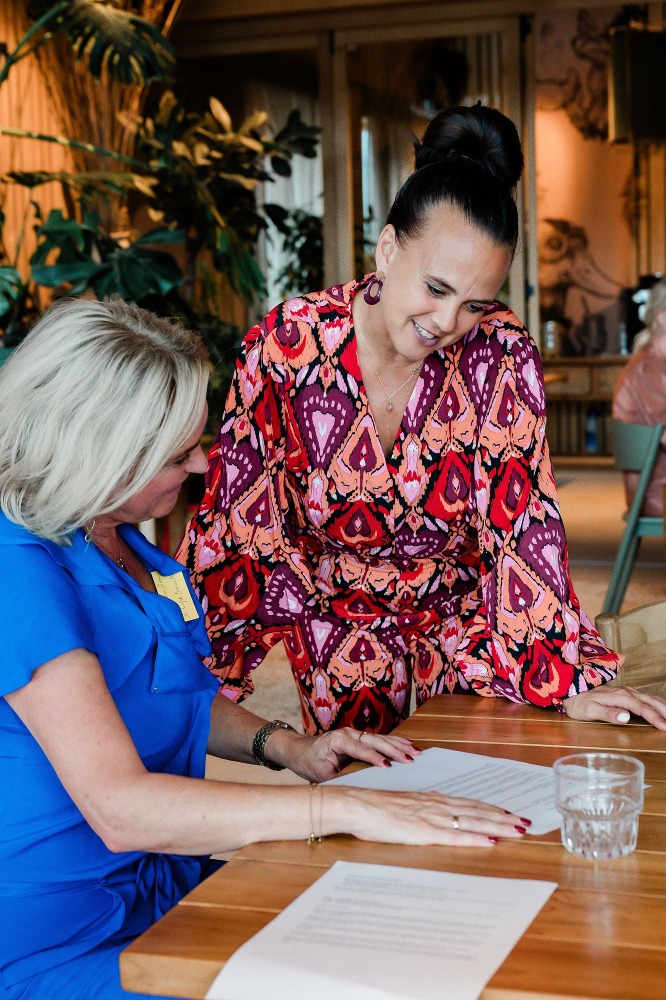
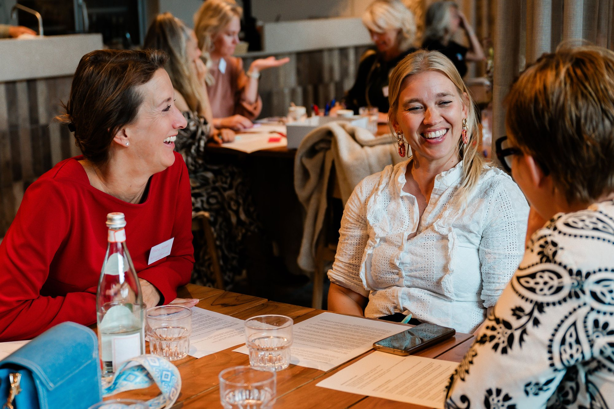
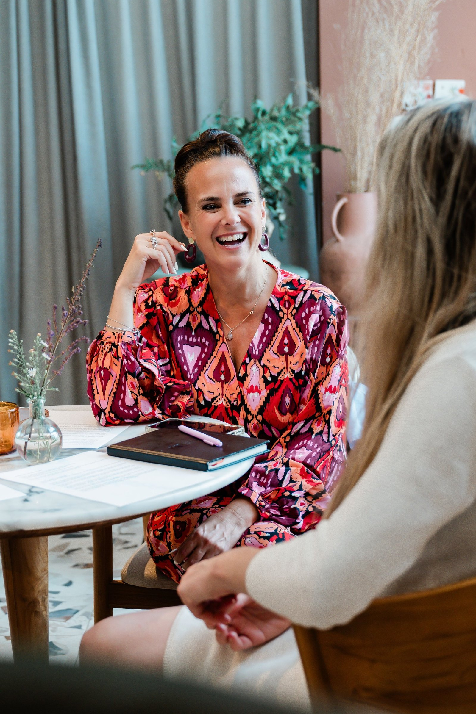
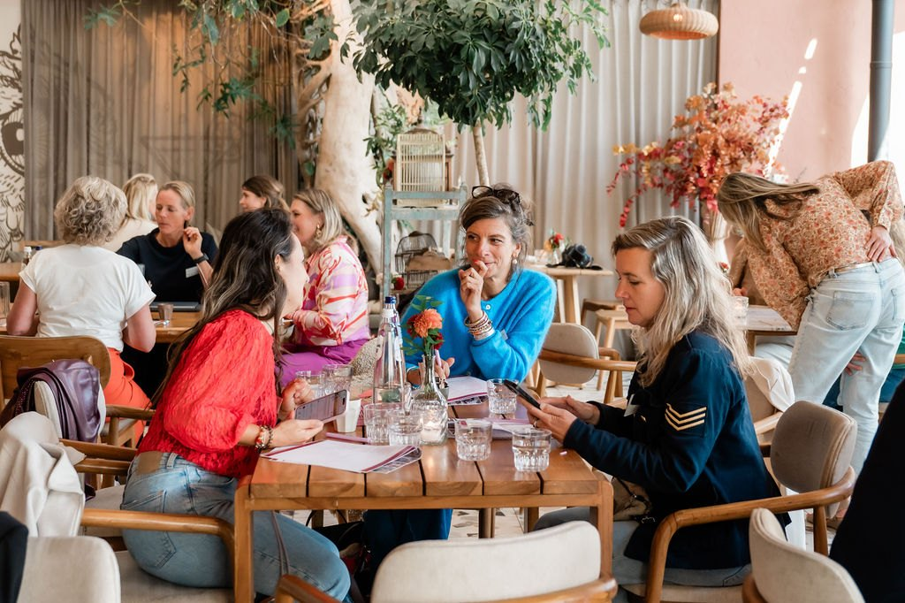
In 3 maanden gaan we samen ontdekken wat er allemaal mogelijk is met AI én hoe je dat slim kunt inzetten voor JOUW bedrijf!
Iedere twee weken gaan we aan de slag met een nieuwe challenge. Van je eigen contentmachine bouwen tot landingspagina’s maken, interactieve tools ontwikkelen en processen automatiseren.
En je hoeft het niet allemaal zelf uit te zoeken. Ik help je stap voor stap om het ook écht voor elkaar te krijgen!
Want hoe leuk al die AI-mogelijkheden ook zijn, soms loop je gewoon even vast. Of heb je geen idee hoe je iets voor JOUW bedrijf kunt toepassen.
En juist daarom zit er in You, Me & AI ontzettend veel persoonlijke begeleiding!
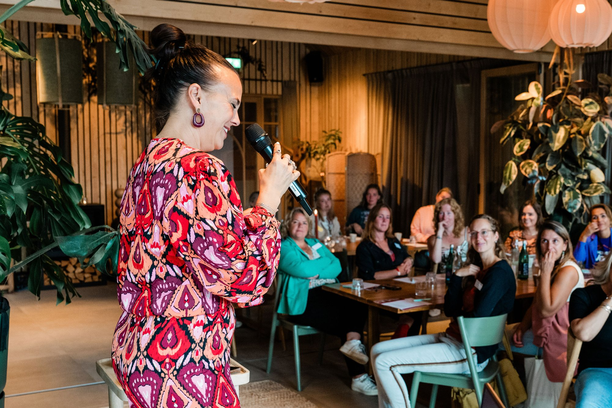
We komen ook een hele dag fysiek samen! En dit wordt niet zomaar een gezellige dag (al wordt het dat natuurlijk ook). We gaan alles wat je hebt gebouwd aan elkaar koppelen, zodat je een slim verkoopsysteem voor jouw bedrijf neerzet.
Iedere twee weken gaan we samen aan de slag met jouw AI-projecten. Niet alleen luisteren en aantekeningen maken, maar meteen zelf bouwen. En loop je vast? Dan help ik je verder!
Voor al je vragen, twijfels en dingen waar je tegenaan loopt. Zodat je niet dagenlang blijft puzzelen op iets waar we samen misschien zo uit zijn.
Een plek waar je vragen kunt stellen, ideeën kunt delen, je successen kunt vieren en elkaar kunt aanmoedigen. Want hoe leuk is het om dit samen met andere ondernemers te doen?!
Met praktische lessen en uitlegvideo’s waar je steeds op kunt terugvallen. Zodat je alles op je eigen tempo kunt bekijken en nog eens kunt terugzoeken wanneer je het nodig hebt.
Ik wil namelijk niet dat je na een training denkt: “Leuk allemaal, maar hoe ga ik dit nu zelf doen?”
Ik wil dat je het ook écht voor elkaar krijgt. En daar gaan we samen voor zorgen!
In 3 maanden gaan we aan de slag met 6 supertoffe AI-challenges. En het leukste? Alles wat je maakt, kun je meteen gebruiken voor JOUW bedrijf!
We gaan Claude zo inrichten dat hij jouw doelgroep, aanbod, expertise en schrijfstijl kent. Zodat je niet steeds opnieuw alles hoeft uit te leggen en AI je veel beter kan helpen bij alles wat je doet.
Je leert hoe je met AI je video’s kunt bewerken, korte reels maakt en daar ook nog eens posts, captions en mails uit haalt. Allemaal in jouw eigen stijl, zodat je veel sneller zichtbaar kunt zijn zonder dat het onpersoonlijk wordt.
Met AI bouw je een professionele landingspagina voor bijvoorbeeld je aanbod, webinar of weggever. Helemaal in jouw huisstijl en zonder dat je hoeft te kunnen programmeren.
Denk aan een quiz of mini-app die je helemaal zelf ontwikkelt met AI. Een originele manier om waarde te bieden én nieuwe leads aan te trekken.
We gaan je landingspagina, weggever en e-mailmarketing aan elkaar koppelen. Zodat mensen zich kunnen aanmelden, automatisch hun weggever ontvangen en worden opgevolgd, zonder dat jij steeds handmatig iets hoeft te doen.
Je leert hoe je met AI een professionele presentatie, masterclass of webinar maakt. Van de inhoud en het verhaal tot de slides waarmee je jouw aanbod op een overtuigende manier presenteert.
Want een mooie salespage bouwen met AI is één ding. Maar hoe zorg je ervoor dat die pagina ook daadwerkelijk verkoopt? En een interactieve weggever maken is supertof, maar hoe zorg je dat je er ook de juiste potentiële klanten mee aantrekt?
Daar komt mijn jarenlange ervaring als businessstrateeg om de hoek kijken! Ik deel namelijk niet alleen mijn AI-kennis met je, maar ook alles wat ik door de jaren heen heb geleerd over marketing, sales en het laten groeien van een bedrijf.
Zodat je niet zomaar leuke dingen bouwt met AI, maar slimme dingen die jouw business verder helpen!
Ik laat je precies zien hoe ik mijn eigen lancering met AI heb opgebouwd. Van mijn eerste ideeën en interactieve weggever tot de salespage, e-mails, automatiseringen en complete funnel.
Je krijgt een kijkje in de stappen die ik heb gezet, de keuzes die ik heb gemaakt en wat ik allemaal door AI heb laten doen.
Inclusief mijn schema’s, voorbeelden en workflows, zodat je precies kunt zien hoe ik AI én mijn businessstrategie in de praktijk combineer!
Een AI-assistent die jouw bedrijf, doelgroep en schrijfstijl kent.
Een slimme contentmachine waarmee je veel sneller content maakt die écht bij jou past.
Een eigen landingspagina én interactieve weggever waarmee je nieuwe leads kunt aantrekken.
Een geautomatiseerde funnel die jouw leads opvolgt, ook als jij met andere dingen bezig bent.
Een professionele presentatie of webinar waarmee je jouw aanbod kunt verkopen.
En misschien nog wel het allerbelangrijkste: de kennis en skills om ook ná dit traject zelf nieuwe dingen te blijven bouwen met AI!
Meer tijd voor je klanten, meer ruimte om te groeien en nog steeds een bedrijf dat helemaal JIJ is.
Beslis je binnen 24 uur? Dan krijg je er een 1-op-1 strategy call van 1 uur met mij bij, t.w.v. € 250,-
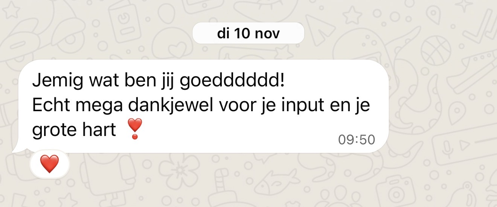
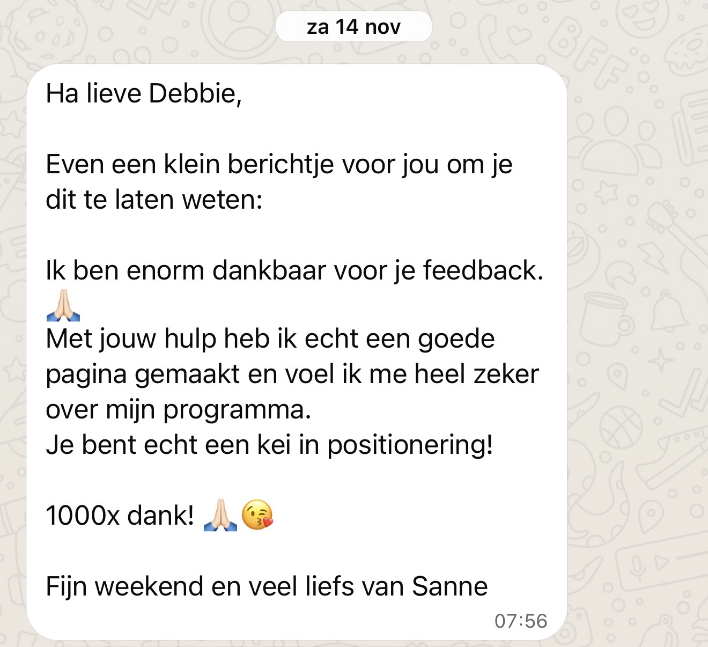
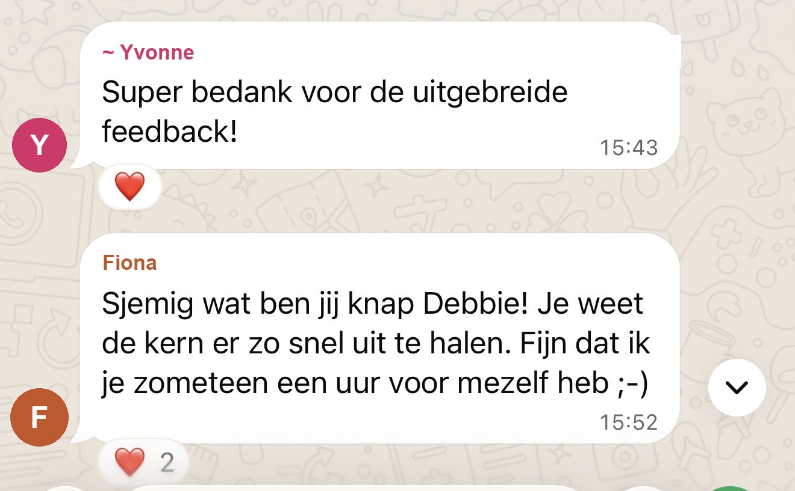
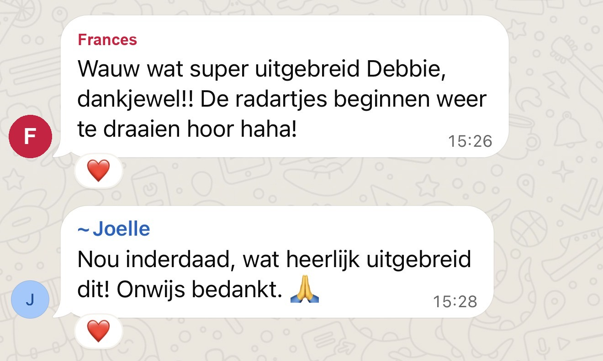
Al 30 jaar ondernemer én inmiddels heb ik meer dan 300 vrouwelijke ondernemers geholpen om hun bedrijf te laten groeien!
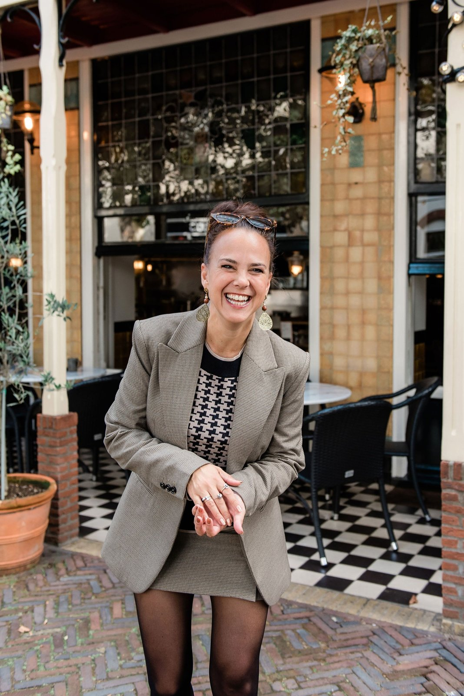
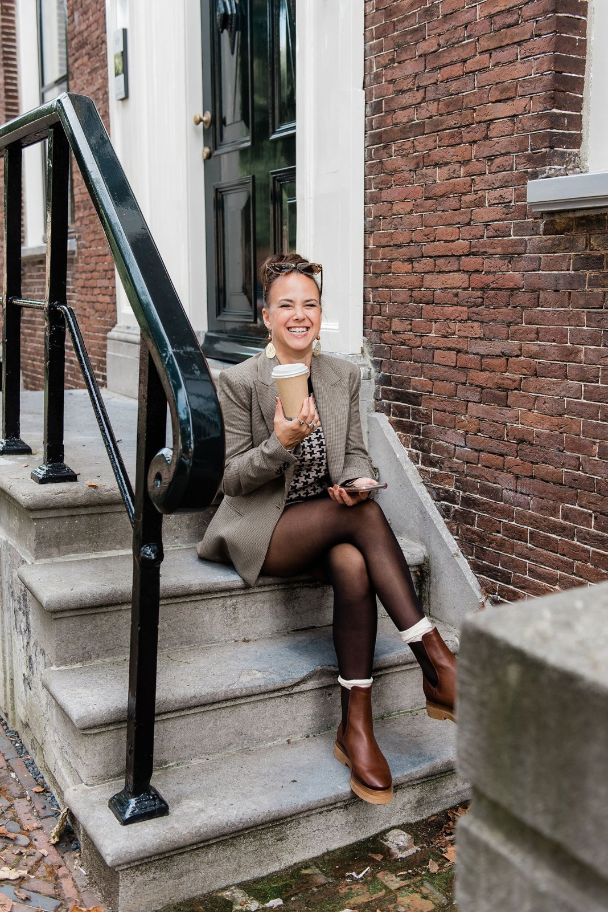
En geloof me, in die 30 jaar heb ik zo’n beetje alle kanten van het ondernemerschap meegemaakt. Van fysieke bedrijven met meerdere locaties en grote teams tot online businesses, marketing en sales. Ik heb het allemaal van dichtbij meegemaakt.
Ik weet dus hoe ontzettend leuk ondernemen is, maar ook hoeveel er allemaal op je bordje ligt!
De afgelopen jaren heb ik me vooral gespecialiseerd in businessstrategie, marketing, content en sales. Ik help ondernemers niet alleen met leuke ideeën, maar vooral met hoe ze die ideeën omzetten naar een bedrijf dat groeit.
En toen kwam AI…
Ik was meteen gefascineerd door wat er ineens allemaal mogelijk werd. Inmiddels gebruik ik AI volop in mijn eigen bedrijf en geef ik samen met mijn partner, die achter Vitamine AI zit, ook praktische trainingen waarin ondernemers zelf leren bouwen met AI.
En juist die combinatie van mijn jarenlange ondernemerservaring, strategische kennis en AI vind ik zo ontzettend gaaf!
Want ik leer je niet alleen hoe je met AI een landingspagina, weggever of funnel bouwt. Ik denk ook met je mee over de strategie erachter. Hoe trek je de juiste mensen aan? Hoe zorg je dat je aanbod goed overkomt? En hoe zet je alles zo in dat het jouw bedrijf ook écht verder helpt?
En misschien nog wel het belangrijkste…
“Ik geloof dat je met AI ontzettend veel kunt bereiken, zonder dat je de persoonlijke verbinding verliest.”
Want uiteindelijk draait ondernemen voor mij nog steeds om mensen. Om samen ideeën tot leven brengen, elkaar inspireren, plezier hebben in wat je doet en blijven groeien.
En precies die combinatie van AI, strategie, persoonlijke aandacht en een flinke dosis energie kun je van mij verwachten tijdens You, Me & AI!
Je bedrijf wilt laten groeien, zonder nóg meer uren te maken.
Nieuw bent met AI óf al van alles uitprobeert, maar voelt dat er zóveel meer mogelijk is.
Niet alleen wilt leren wat AI kan, maar vooral ZELF aan de slag wilt.
Het leuk vindt om samen te bouwen, ideeën uit te wisselen en persoonlijk begeleid te worden.
Liever een paar video’s kijkt en het daarbij laat.
Verwacht dat AI met één druk op de knop je hele bedrijf voor je regelt.
Geen tijd wilt vrijmaken om écht aan je bedrijf te werken.
Vooral op zoek bent naar technische AI-kennis, zonder die direct toe te passen in je eigen business.
Je hebt natuurlijk ook gewoon een bedrijf te runnen! Daarom gaan we iedere twee weken met één concrete challenge aan de slag. Je hoeft niet zelf urenlang uit te zoeken hoe alles werkt, want ik help je stap voor stap. En wat je bouwt, kan je daarna juist heel veel tijd besparen!
Jazeker! Want we gaan niet aan de slag met allerlei fictieve voorbeelden. Je bouwt alles voor je eigen bedrijf, met jouw doelgroep, aanbod en ideeën als uitgangspunt. En ik denk ook met je mee over hoe je het strategisch slim inzet!
Dan weet je waarschijnlijk al hoeveel er mogelijk is. Maar iets weten is nog iets anders dan het ook écht voor elkaar krijgen! Daarom gaan we hier niet alleen kijken en luisteren. We gaan samen BOUWEN, met persoonlijke begeleiding, zodat je eindelijk die ideeën kunt uitvoeren.
JAAAA! 😍 Je hoeft echt niet te kunnen programmeren. We beginnen bij de basis en ik neem je stap voor stap mee. En loop je ergens vast? Dan kun je gewoon je vragen stellen. Je hoeft het niet allemaal zelf uit te vogelen!
We starten op donderdag 21 januari 2027.
Reken op ongeveer 4 uur per week. Zo kun je de live sessies bijwonen en ook echt aan de slag met je eigen challenge.
Nee. Beginners zijn welkom, we starten met het leggen van de basis.
Je hebt levenslang toegang tot de online leeromgeving.
Ja! Alle live sessies worden opgenomen, dus je kunt ze altijd terugkijken.
De You, Me & AI LIVE! is begin april 2027, op een fantastische locatie. De exacte datum en plek hoor je zo snel mogelijk.
Ja, dat kan! Je kunt in 1 keer betalen, in 2 termijnen of in 3 termijnen van € 333. Alle bedragen zijn exclusief btw.